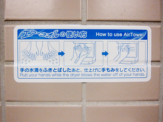

Directions and instructions are everywhere, from gas pumps to microwave meals. IKEA instructions are famous for their line drawings with no words. Directions for technology can be impossibly difficult to follow.
Today’s post considers one of the decisions you will make as you work on the User Manual. As you work on the steps of your instructions, you have to decide whether you will use a sequence or separate tasks.
Watch this LinkedIn Learning video on List Steps. The video is free with your VT login. Follow these instructions to login.
After you view the video, you can comment on the strategies that are used to organize instructions in the video, OR tell us about instructions you have interacted with that used sequences or separate tasks. Did the choices make sense?
Photo credit: Jet hand dryer instructions by Amit Gupta on Flickr, used under a CC-BY-NC 2.0 license.